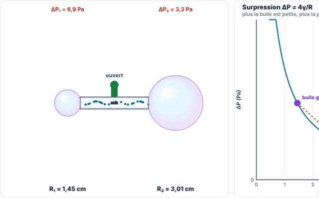

Université · BA1Gratuit
Physique BA1
Mécanique, fluides, gaz, ondes, optique, électricité et magnétisme. Chaque chapitre suit le même chemin : tu manipules les simulations, tu relis la théorie animée, puis tu t'entraînes sur des exercices corrigés du ★ au ★★★★★.
16chapitres
77simulations
276exercices et QCM

Deux bulles de savon reliéesChoisis un chapitre. Chaque chapitre contient ses simulations, un rappel théorique avec schéma animé et ses exercices de difficulté croissante (★ → ★★★★★).
Pour réviser et s'entraîner
Les chapitres d'outils et les QCM de révision qui couvrent tout le cours.